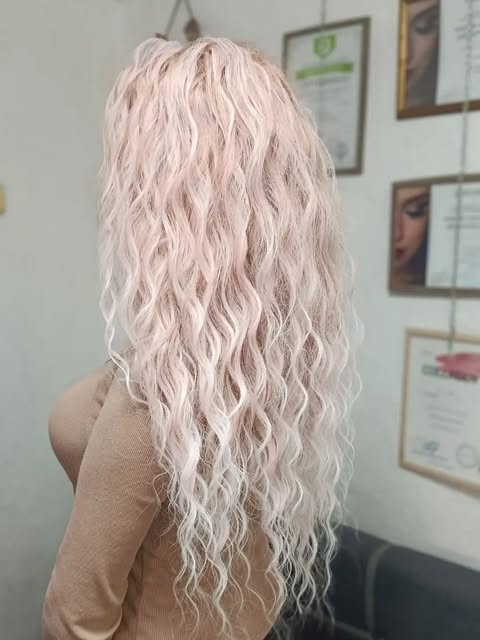
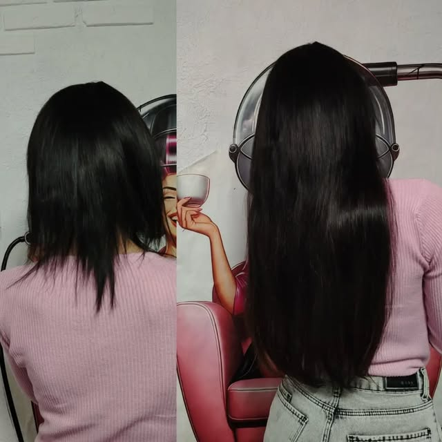
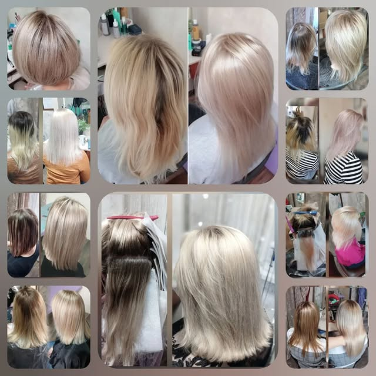
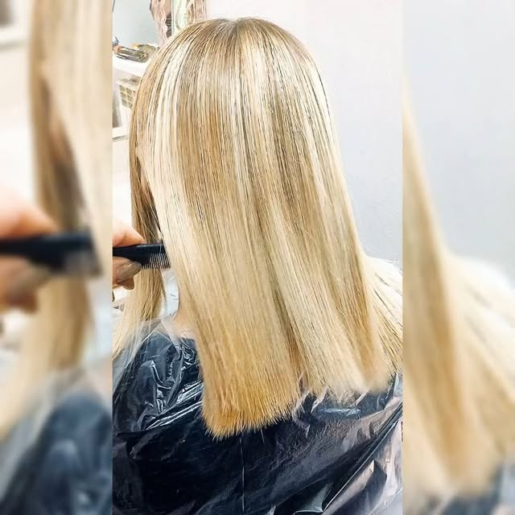
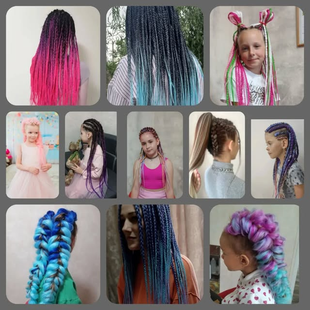
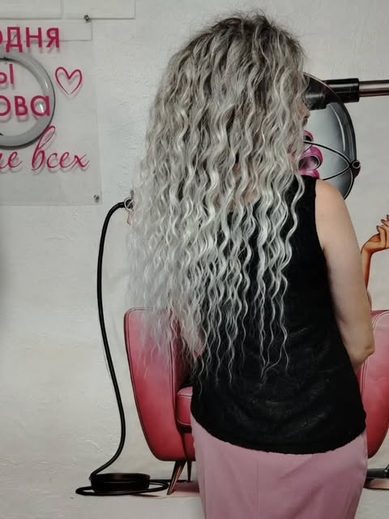
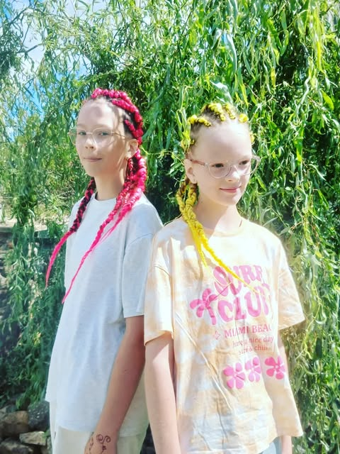
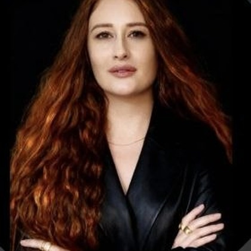

Наращивание волос
Капсульное и ленточное, подбор длины и густоты. Аккуратное снятие и коррекция без вреда для своих волос.
цена по запросуНаращивание • Окрашивание • Кератин • Афрокосы
Наращивание, бережное окрашивание и восстановление волос в Глубоком. Подберу длину, густоту и оттенок, которые подходят именно вам.
Дипломированный мастер · опыт более 7 лет · преподаватель по наращиванию волос

Услуги и цены
Точную стоимость назову после фото ваших волос - цена зависит от длины, густоты и исходного состояния.
Капсульное и ленточное, подбор длины и густоты. Аккуратное снятие и коррекция без вреда для своих волос.
цена по запросуСложные техники: балаяж, шатуш, аиртач, блонд без желтизны. Работаю на профессиональных красителях.
цена по запросуКератиновое выпрямление и нанопластика - гладкость и зеркальный блеск на месяцы. Биозавивка - упругие локоны без вреда для волос.
цена по запросуГлубокое восстановление повреждённых волос: питание, плотность и мягкость уже после первой процедуры.
цена по запросуПлетение любой сложности: классические косички, яркие канекалоны, детские плетения.
цена по запросуЧистка лица, лифтинг, аппаратные методики, липолитика - уход за лицом и коррекция объёмов тела.
цена по запросу






Обо мне
Дипломированный мастер с опытом работы более 7 лет. Помогаю девушкам влюбляться в своё отражение: наращиваю длину и густоту, возвращаю волосам здоровье после неудачных окрашиваний и создаю оттенки, которые подчёркивают внешность, а не спорят с ней. А ещё забочусь о лице и теле - аппаратная косметология, чистки и лифтинг.
С 2021 года преподаю в образовательном центре «Новое завтра» (г. Минск): обучаю мастеров наращиванию волос и плетению афрокос. Мой главный принцип - честность: если процедура вам не подойдёт или может навредить, я скажу об этом прямо и предложу план мягкого восстановления.
Отзывы
«Спасибо огромное мастеру Ольге за такую чудесную работу! Я очень довольна результатом: косички получились просто великолепные, очень аккуратные и прочные. Мастер была очень внимательна и терпелива, всё сделала быстро и качественно. Атмосфера очень приятная. Я обязательно буду рекомендовать вас своим друзьям!»
«Хочу сказать огромное спасибо человеку, который дал вторую жизнь моим волосам и преобразил меня. Работа сделана очень качественно и аккуратно. Ольга, большое спасибо тебе за твою работу - я очень довольна!»
«Отдельное спасибо Ольге за красоту моих волос - их длина и объём говорят сами за себя. Разница с волосами до процедуры огромная!»
Контакты
Напишите мне - отвечу в течение часа. Пришлите фото волос, и я назову точную стоимость и подберу время.
📍 г. Глубокое, ул. Суворова, 28
🕐 Пн-Сб: 10:00-20:00, по записи